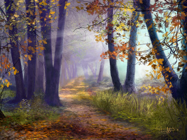

Вы сворачиваете на тропинку, ведущую к пещере.
Через десяток метров вам преграждает путь поваленное дерево.
На нём с видимым комфортом устроился старец в серой хламиде из грубой ткани.
Он пристально смотрит вам в глаза.

Ваши действия: